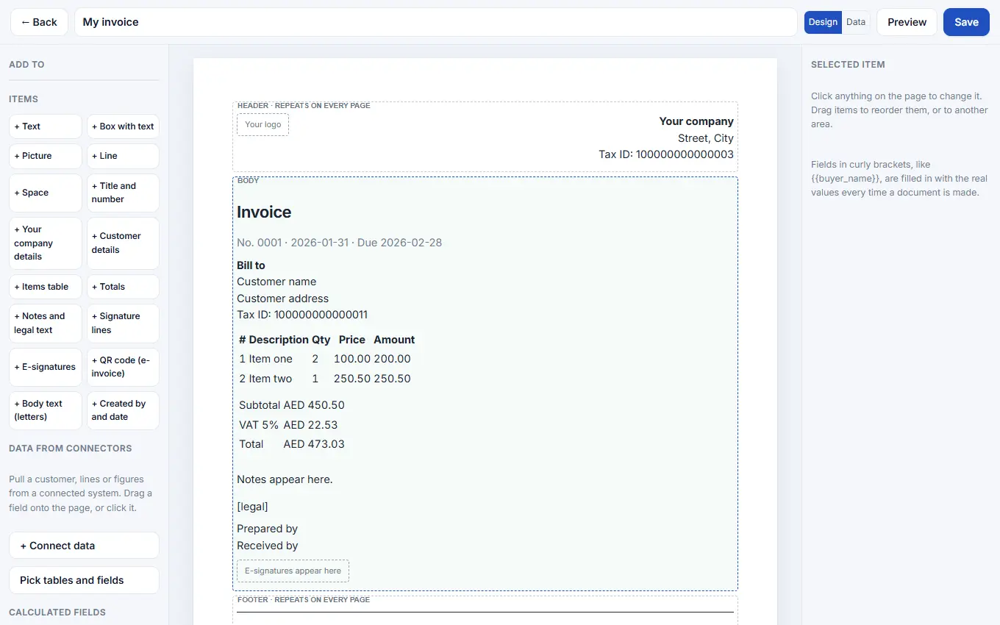
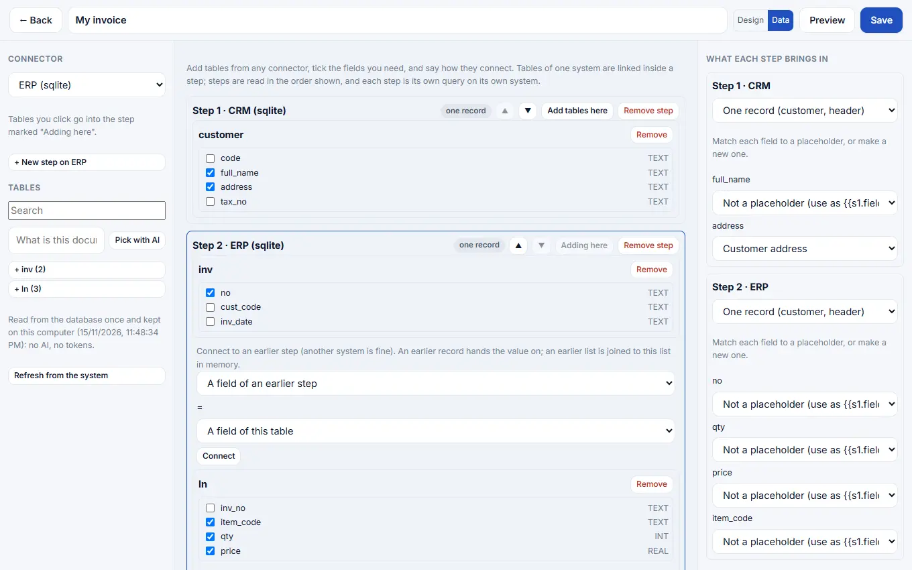
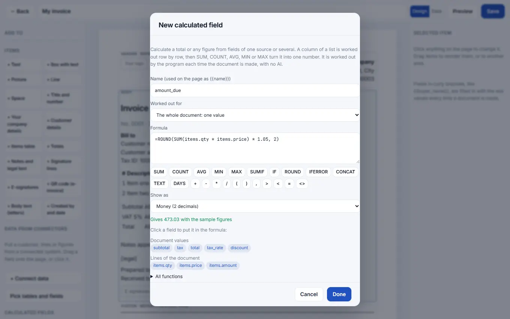

Documents: designer, data and calculated fields
Design invoices, quotations, letters and statements once, bring their data from any connected system, add totals and formulas, and make them as a page or PDF with no AI.
What a template is
A template is a page you design once: your logo, title, customer details, a table of lines, totals, notes and signature lines. Raap Nexus fills it with real values every time a document is made, as a page you can print or save as PDF. Open it in Settings > Documents and choose a template, or start a new one.

Design the page
- Pick where new items go (header, body or footer), then click an item on the left to add it. Drag items on the page to reorder them.
- Click an item to change its text, size, colours, border and width. Fields in curly brackets, such as {{buyer_name}}, are filled in each time a document is made.
- Choose the page size, orientation and margin, and optional page numbers. Press Preview to see the page with sample figures, then Save.
Bring in data from your systems
Open the Data tab. Choose a connector (a database, an OData service or a REST API) and click the tables you need. Tick the fields to use and say how the tables connect. Tables of one system are linked inside one step, and each step is its own query on its own system. You can add tables from several connectors on the same canvas.

The steps are read in the order shown. A step that finds one record, such as a customer, hands its values to the steps after it, so a later lookup uses them instead of asking again. A list of rows can be joined, in memory, to an earlier step on one field, which works across different systems because the joining is done by Raap Nexus and never in SQL. Press Run a test to read every step with test values, then Add to template.
Each document asks for the values that find one record, for example the invoice number and the branch. A list with no key is read in full (up to 500 rows): use it for a reference list such as items or customers, and put it before the list it enriches.
Calculated fields
A calculated field is a total, a sum or a formula over fields of one source or several, for example a balance due from the invoice lines of one system and the payments of another. Press + Calculated field, give it a name and write the formula, or click functions and fields to build it. The result is tried at once on the sample, and a mistake is explained in plain words.

- Lists:
items.qty * items.priceis worked out row by row, thenSUM,COUNT,AVG,MINorMAXturn it into one number.SUMIF(test, list)adds up only the rows where the test is true. - Several sources:
s1.total - s2.paiduses one field of the first source and one of the second. - Choices and rounding:
IF,IFERROR,COALESCE,ROUND, and for textCONCATandTEXT;DAYScounts days between two dates.
Choose Worked out for “the whole document” for one value, or for each row of a list to add a new column. Drag the field onto the page, or click it, to place it. Formulas are worked out by the program every time the document is made.
Make a document
Ask in Chat, for example “make an invoice for customer Acme”, or add the step that makes a document to a workflow. The values that find the record are asked for, everything else is read from your systems and calculated. If several records match, Raap Nexus lists them and tells you what to add.
What uses AI
Only describing the data in words the first time (the optional Pick with AI sees table names, never data). Reading the systems, joining, calculating and making the document are done by code. For reports made of blocks, see Reports.